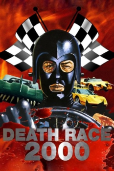

Country:United States, 80 minutes
Spoken languages:English
Genres:Action, Sci-Fi
Director(s):Paul Bartel
Writer(s):Charles B. Griffith, Robert Thom
Video Codec:Unknown
Number: 2883


Certification:R
Storyline:
In a boorish future, the government sponsors a popular, but bloody, cross-country race in which points are scored by mowing down pedestrians. Five teams, each comprised of a male and female, compete using cars equipped with deadly weapons. Frankenstein, the mysterious returning champion, has become America's hero, but this time he has a passenger from the underground resistance.
Cast:

Medium: Bluray,
Loaned: No
Aspect ratio: Unknown